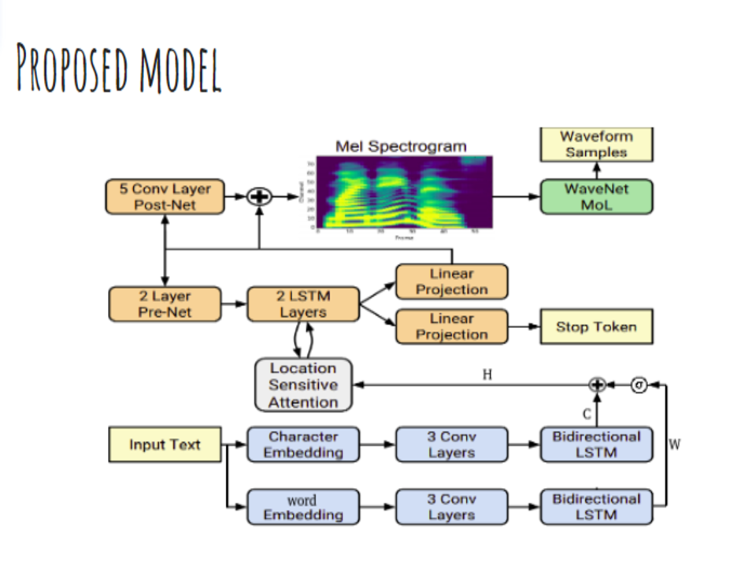

| Model | MOS |
|---|---|
| Tacotron 2 | 4.526 |
| WaveNet(Linguistic) | 4.341 |
| WaveNet(L+F) | 4.21 |
Text to speech
- Bassam Ashraf El-Sayed Mohammed Mattar 16
- Sajed Hassan Kamal Eldeen Almorsy 27
Problem Statement
Our project is concerned with text to speech conversion. Simply it takes text as input and generate a human speech voice speaking this text. This feature has many applications such as helping mute people communicate easily and also help people who lost their voice to bring it back. This is not an easy problem and has a lot of challenges so it will be a good opportunity to learn one of the hottest problems in the deep learning field.
Dataset
LJ-speech dataset is audio and transcript pairs that contain almost 24 hours of labeled single actress voice recording.
Input/Output Examples
Input: The examination and testimony of the experts enabled the Commission to conclude that five shots may have been fired.
Output:
Input: Many animals of even complex structure which live parasitically within others are wholly devoid of an alimentary cavity.
Ouput:

State of the art
the metric used to compare between models is mean opinion source(MOS).
Orignial Model from Literature
We selected Tacotron 2 to use it as a solution for our problem to get better performance as it is giving the state of the art results. And this model consists of two components:
- recurrent sequence-to-sequence feature prediction network with attention which predicts a sequence of mel spectrogram frames from an input character sequence.
- A modified version of WaveNet which generates time-domain waveform samples conditioned on the predicted mel spectrogram frames.

Proposed Updates
Update #1: Used word embeddings
The proposed update is to add word embeddings along with character embeddings and this is expected to improve performance as characters have different pronunciation according to its location in the word and this information is given by word embeddings. We also noticed that the original model has problem of generating un-necessary acoustic units in some cases and we hope introducing word embeddings will solve this problem.
Results
We compare our output quality using mean opinion source(MOS) metric . We generate paired samples of the original and the proposed model to compare between them. We use a google form to collect opinions. We use t-test to compare between the original and the proposed model (hypothesy to test: both models quality are equal).
Technical report
- Programming framework: PyTorch
- Training hardware: google colaboratory
- Fine-tuning time(after transfer learning): 10 hours
- Number of epochs: ~8 epochs (6000 iterations)
- Time per epoch: ~1.25 hours
Conclusion
- Any additional information is used always will not hurt the performance.
- We find that the both models generate a human-like voice and this can be used for an unpleasant action.
- The proposed model is taking up huge amount of storage in hard disk (1.72GB) relative to the original model which takes only 328MB on hard disk. Our next step is to down size model without hurting the quality.
- Also, We aim to extend the proposed model to be multilingual and to support multi-voices.